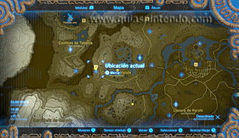
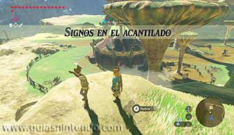
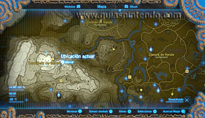
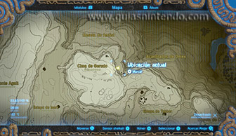
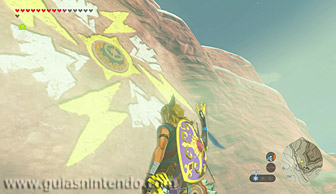
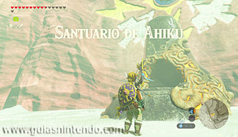
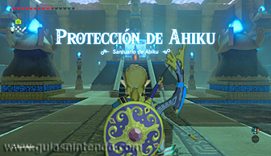
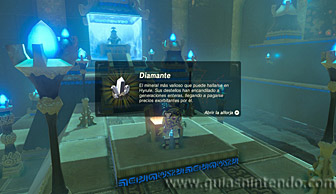

Se encuentra en la región de la torre de Gerudo, pero como está oculto, tendrás que completar la Prueba heroica "Signos en el acantilado" para sacarlo a la luz. Para activar dicha prueba debes hablar con un personaje llamado Geggle al que podrás encontrar en la cima de una colina ubicada al sur de la posta de Tabanta, alrededor del mediodía y si no llueve.

Geggle te hablará de un acantilado que hay en la cordillera de Gerudo, y para encontrarlo tendrás que dirigirte hacia el sudoeste, a una zona que hay al norte de dicha cordillera. Dirígete a un punto ubicado entre el nordeste de la cima de Gerudo y el sudeste de la meseta de Amtist, y allí encontrarás una especie de pedestal en la pared de un acantilado.

Luego lanza una flecha eléctrica a dicho pedestal (si tu arco no llega desde abajo tírate desde arriba y dispara en el aire) y así completarás la prueba heroica y harás aparecer el santuario.

Dentro del santuario solo encontrarás un cofre que contiene un diamante, y después solo te quedará caminar para llegar al altar y conseguir el símbolo de valía.
